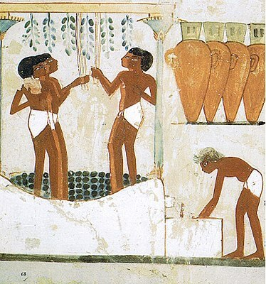
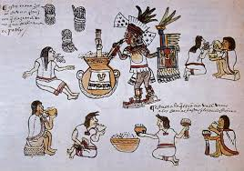

El vino se produjo por primera vez durante el Neolítico, según los testimonios arqueológicos hallados en los montes Zagros, en la región que hoy ocupan Irak e Irán, gracias a la presencia de Vitis vinifera sylvestris y la aparición de la cerámica durante este periodo. Posteriormente, el consumo de vino se extendió hacia el occidente, llegando a Anatolia y Grecia; y hacia el sur, llegando hasta Egipto, ya célebre en Bahariya durante el Imperio Medio (siglo XX a. C.). Lo primero que cabe destacar es que el vino, a lo largo de la historia, ha estado muy bien considerado por la alta sociedad occidental, donde existe constancia de su producción en el siglo III a.C.12. Desde entonces ha sido testigo imprescindible en cualquier acontecimiento o banquete de importancia y alrededor de él se han firmado los grandes tratados y acontecimientos históricos de occidente. Ya en Egipto, Grecia y Roma, se adoraba a Dioniso o Baco (dios de los viñedos) y la Biblia se refiere al vino en diversos pasajes, entre otros donde relata la última cena de Jesús13. Sabemos que en China, hace 4000 años, ya conocían el proceso de fermentación de la uva, y que en Egipto, en el siglo XIV a. C., ya conocían la viticultura.
La historia de las bebidas alcohólicas va ligada a la propia historia del ser humano. El consumo de alcohol ha formado parte de nuestra cultura y sociedad durante siglos. Probablemente ningún comportamiento humano ha ocasionado tantas controversias, mitos, prejuicios, malentendidos e incomprensiones como el consumo de alcohol. Los estudios antropológicos evidencian que ciertas bebidas alcohólicas fermentadas, como el vino y la cerveza, eran ya consumidas hace al menos cinco mil años. Las bebidas con alcohol, por su naturaleza y sus efectos, se vincularon pronto con lo divino y se asociaron a los rituales religiosos. Los egipcios dieron crédito a Osiris por haberles permitido conocer el vino y la adopción de normas de convivencia benévola y tolerante. Los hebreos atribuyeron a Noé el haberse dedicado a la labranza y a plantar la vid; en la Biblia se menciona que bebió vino para celebrar el final del diluvio universal y que se embriagó. Los griegos veneraban a Dionisio,como un dios liberador, del frenesí, de la danza y de la embriaguez, características de las fiestas bacanales. Se le creía el inventor del vino, que proporcionaba alegría y delicias a los mortales disipando las penas. Para los cristianos, el vino es una de las materias de la eucaristía, que simboliza la sangre de Cristo, el hijo de Dios.
*Nuestro plan de trabajo comienza con nuestra misión, que es perdurable y expresa nuestro propósito como Compañía. Sirve como el patrón sobre el cual ponderamos nuestras acciones y decisiones.
*Ser una empresa líder en distribución de bebidas para satisfacer los gustos y necesidades de consumidores pensando siempre en su bienestar.
*Comercialización de vinos tintos, blancos y rosados de alta calidad y alto disfrute, bebidas blancas y destiladas.
*principalmente a traves d enuestro canal e-comerce.
*Buscando una rentabilidad y un valor para el capital invertido.
*Contribuyendo al desarrollo de sus trabajadores y de la región.
*Nuestra visión actúa como el marco de nuestro plan de trabajo y guía cada uno de los aspectos de nuestro negocio mediante la descripción de lo que necesitamos lograr para continuar alcanzando un crecimiento sostenible y de calidad.
*Ser una empresa competitiva, reconocida por su dinamismo, en desarrollo y ofrecer bebidas que superen las expectativas de los clientes.
*Dentro del sector de la distribución de bebidas, mejorar la calidad, consolidar el liderazgo y aumentar la cobertura en territorio nacional e internacional.
*Ser una empresa responsable, eficiente, dinámica y comprometida con la investigación y la innovación como camino para el liderazgo.
*Seguir siendo una empresa capaz de competir globalmente.
*Seguir siendo un opción segura y de confianza para nuestros clientes en un mercado atomizado con infinidad de alternativas tanto locales como internacionales.